En el Gimnasio, siempre divertido, profesional y en constante actualización, los esperamos para juntos llevar adelante el preparamiento físico necesario para la práctica de deportes, el desarrollo de actividades sociales y desafíos de resistencia, para la realización de variadas y numerosas disciplinas de entrenamiento, como así también para llevar adelante la práctica de Taekwondo.
Siempre con una variada y actualizada agenda de actividades para compartir juntos el entrenamiento físico mediante la práctica de complementos, la realización de divertidas clases, y el desarrollo de actividades grupales al aire libre.
A demás de la práctica de COMPLEMENTO CON PESAS, contamos con clases de:
- ENTRENAMIENTO FUNCIONAL
- CROSS - TRAINING
- STRETCHING – POSTURAL
- CIRCUITO DE FUERZA
- CARDIO FULL
- CARDIO WORKOUT
- LOCAL INTENSIVO
- HIT
- AQUAGYM
- RITMOS
- YOGA
- GAP
- BOXEO
- PATINAJE ARTISTICO
- ENTRENAMIENTOS ORIENTADOS A DESAFIOS DE RESISTENCIA (ESTE 2022 TRECKING AL VOLCAN LANIN)
El horario del Gimnasio es de lunes a domingo de 08:00hs. a 22:00 hs
Nuestra agenda de clases es:
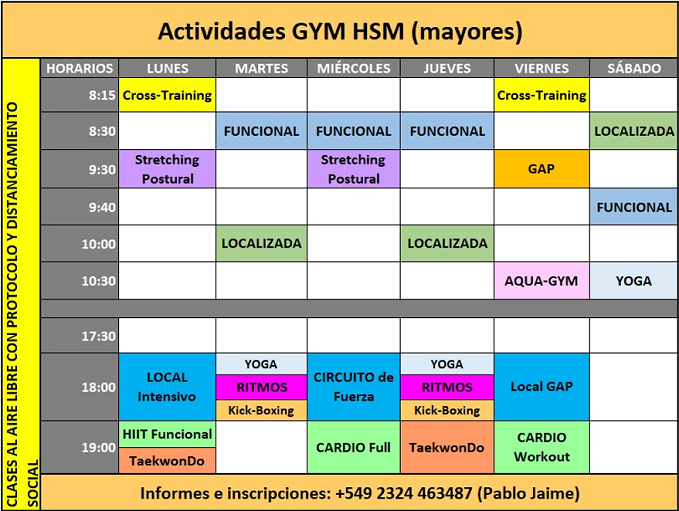
También contamos con la posibilidad de llevar adelante la práctica del Taekwondo en una escuela reconocida a nivel mundial (ITF), a través de su práctica, se desarrolla el estado físico, el compañerismo, el respeto, el sentido de pertenencia, y de los valores contenidos en sus principios (Integridad – Perseverancia – Autocontrol – Espíritu indómito).
Todo esto se encuentra disponible en el Gimnasio como vecinos de Haras, los invitamos a participar en las actividades propuestas, las que se desarrollan en un ámbito de diversión, buena vecindad, cordialidad y ganas de compartir entre todos los que unimos la búsqueda de un estado saludable, en un espacio distendido, ameno y siempre controlado por el profesionalismo de los coordinadores y profesores que nos guían.
Los esperamos!!
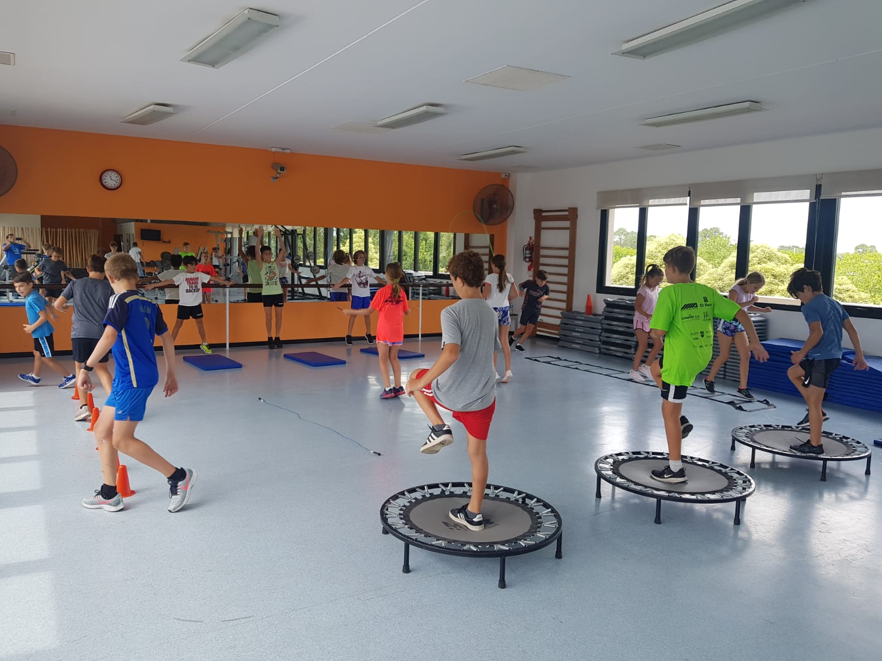
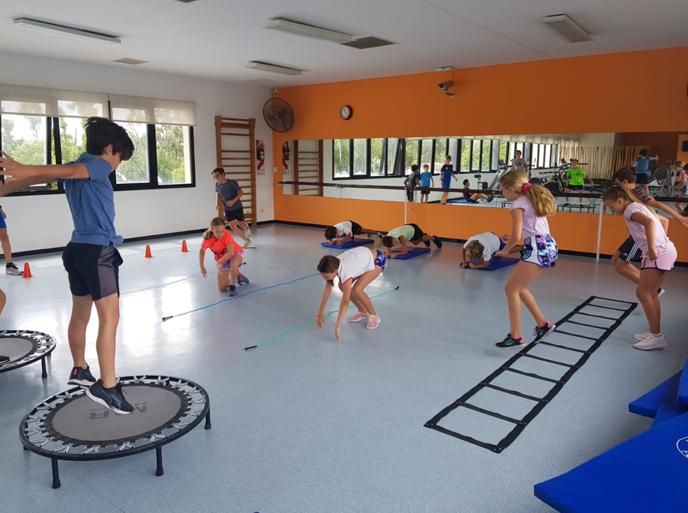
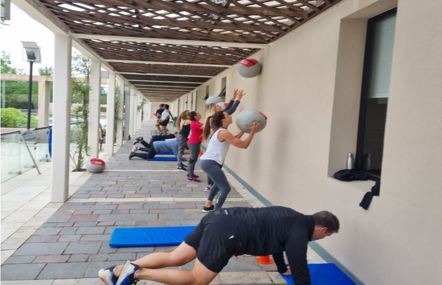
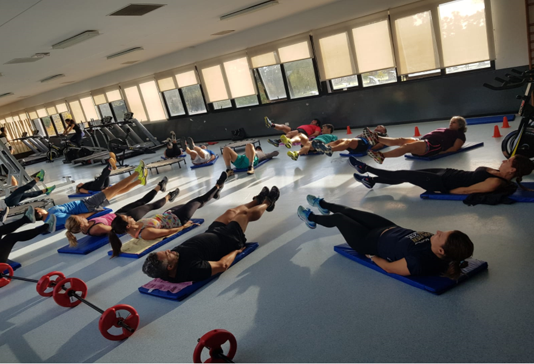
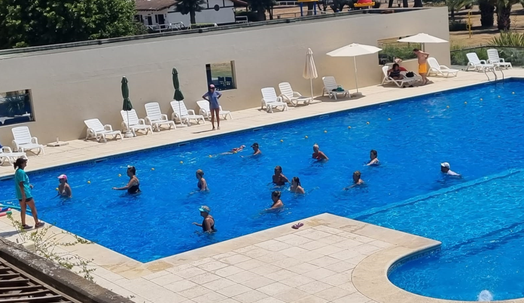
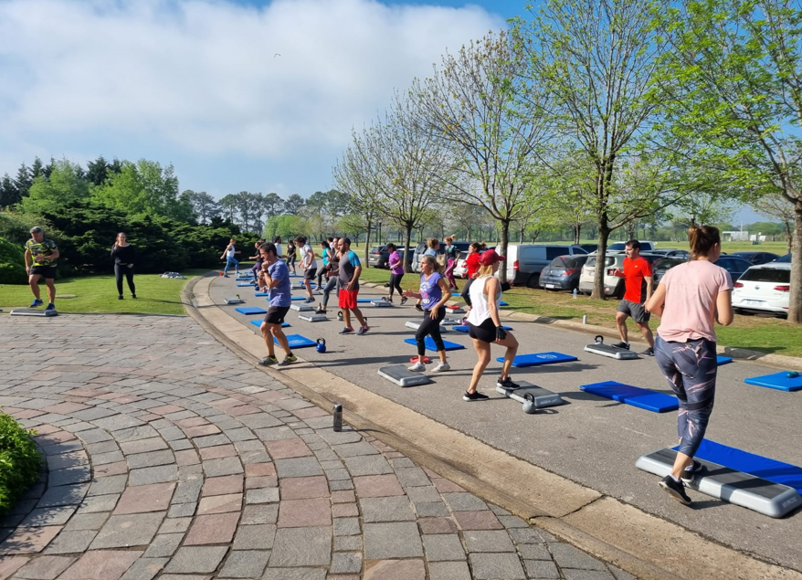
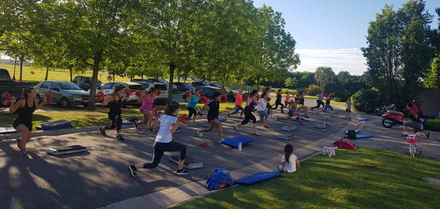
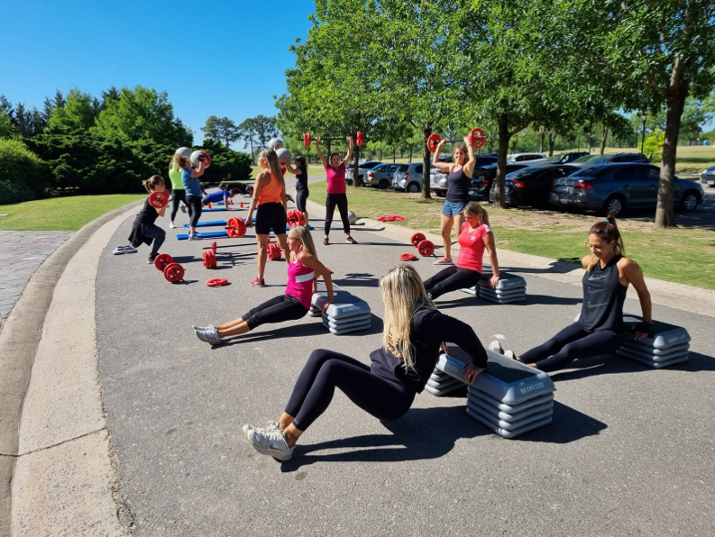
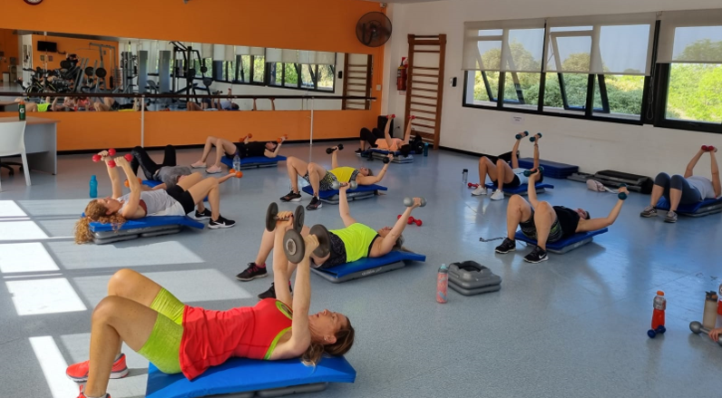
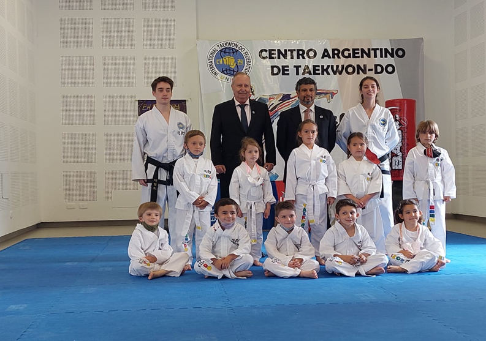
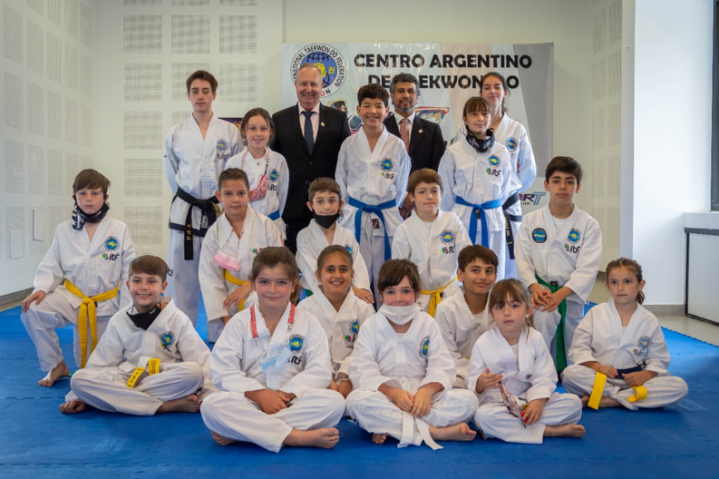